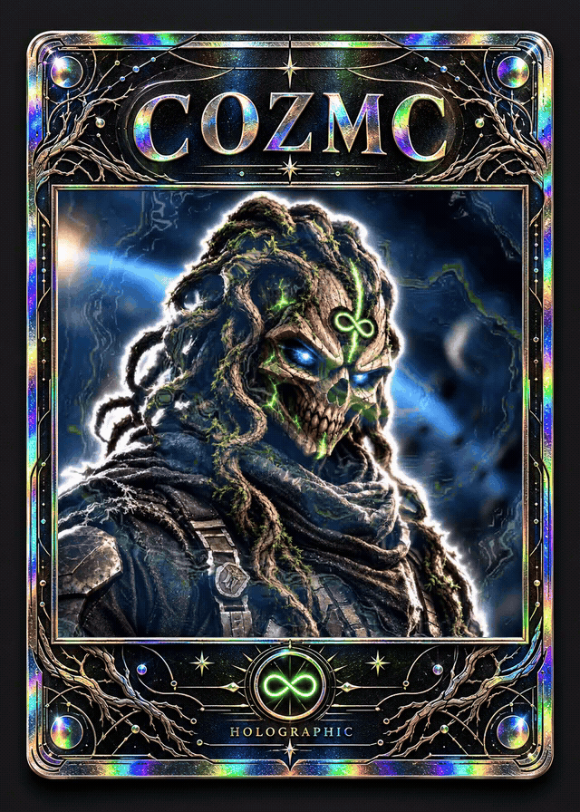

01
Games that connect us.
Game nights, playtesting, and ideas worth making. A place to find people who enjoy playing and creating together.
PLAYCommunity & Philosophy
COZMC is a community and token on Algorand built around gaming, philosophy, and good vibes. Together, we’re connecting good people and turning shared ideas into positive change.
Rooted in Algorand. Open to the world.
COZMC / ASA 3739851986
01 / The philosophy
COZMC is about seeing the human experience more clearly, making room for what matters, and living with intention.
Drip by drip, the bucket fills.
Brick by brick, we build.
02 / The community
The community will help decide what COZMC becomes. Here are the interests and ideas we want to bring together.
Game nights, playtesting, and ideas worth making. A place to find people who enjoy playing and creating together.
PLAYPhilosophy, honest questions, and the everyday practice of becoming a little more intentional.
THINKFind collaborators who follow through, support each other, and want to help the Algorand network grow.
CONNECTExplore local gatherings and practical community projects that leave our corner of the world a little better.
BUILD03 / A note from the founder
I’m here to get things started.
We decide what comes next.
Gaming, philosophy, and good vibes are big influences for me. I want us to build this community together and decide together what it becomes.
The bigger mission is to grow the Algorand network and create a steady, trustworthy place to ask questions, find good collaborators, and get honest, useful guidance.
I’m here to listen, connect people, and help us grow something we can feel good being part of.
Markus04 / The token
Our first focus is building the community. Future token uses will be explained here as they are defined alongside the projects we choose to develop.
On-chain details checked October 14, 2026. The fully diluted value is a snapshot from that date and changes with market price. View on-chain data
The planned path
Launch COZMC and begin bringing the community together.
Pact farming is the next planned step after bonding is complete.
Choose the games, collaborations, and real-world projects we want to pursue.
General platform links. COZMC’s confirmed launch and farming details will be published here.
The mission is to grow.
Good people. Shared ideas. Small steps that add up.
Official X and Discord links will be added here when confirmed.
What we can build together